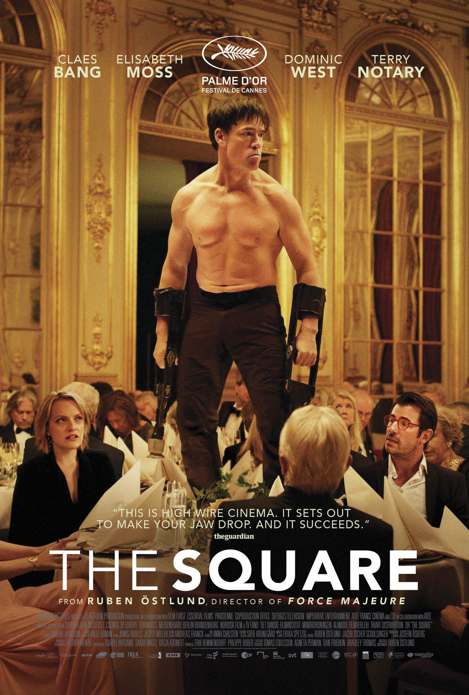
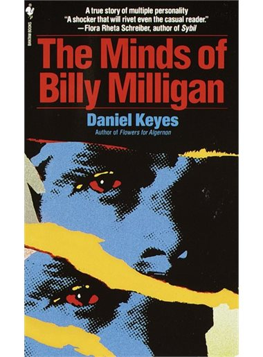

Laura Johanna Meyer
Web developer @Le Wagon
I studied psychology and neuroscience at Maastricht University and during my study I engaged with topics related to Artifial Intelligence. I decided to continue with the AI Master which I want to start after Le Wagon. Le Wagon gives me the opportunity to gain technical background, learn to code and helps me to understand the concept of AI a bit more.
Favorite movie
|  | The SquareRuben Östlund’s sprawling and daringly surreal satire The Square turns a contemporary art museum into a city-state of bizarre, dysfunctional and Ballardian strangeness. It is a place where one important person’s guilt infects an entire society with a creeping nervous breakdown, at once intensified and yet camouflaged by a notional belief in aesthetic nonconformism and provocative performance art. This movie really brings some gobsmackingly weird and outrageous spectacle, with moments of pure showstopping freakiness. Eventually it loses a bit of focus and misses some narrative targets which have been sacrificed to those admittedly extraordinary set pieces. It doesn’t have the pure weapon-like clarity of Östlund’s previous film Force Majeure. But it sets out to make your jaw drop. And it succeeds. |
Favorite book
|  | The Minds of Billy MilliganThe Minds of Billy Milligan (1981) is a nonfiction work by Daniel Keyes following the life of Billy Milligan, a rapist and robber who was judged to be insane after claiming to have a multiple-personality disorder (currently called dissociative identity disorder, DID). Keyes is most famous for the novella Flowers for Algernon (1959). This work blends biography, true crime, and general psychology. It received several awards and was the basis for several documentaries. Its themes include deception, the nature of mental illness, and the interaction between the criminal justice system and mental illness. |
About this page
This page is about me - Laura - my favorite movie and my favorite book.